×

A visual exploration of cyclist route choices in London
In the complex urban landscape of London, cyclists face a fundamental choice: the fastest route or the most pleasant one. This study examines two contrasting cycling routes through East London, revealing the hidden logic behind cyclist route preferences through photographic documentation.
Through comparative analysis of the Whitechapel Road Superhighway and the scenic Regent's Canal route, we explore how infrastructure, environment, and urban design influence cyclist behavior and route selection between speed-optimized and sense-optimized pathways.
Aldgate East to Mile End
The speed-optimized route: a dedicated cycling superhighway designed for efficient urban transport through one of London's busiest corridors.
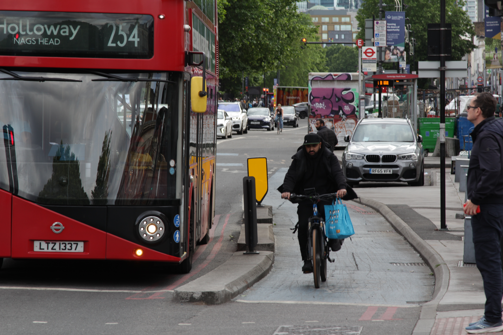
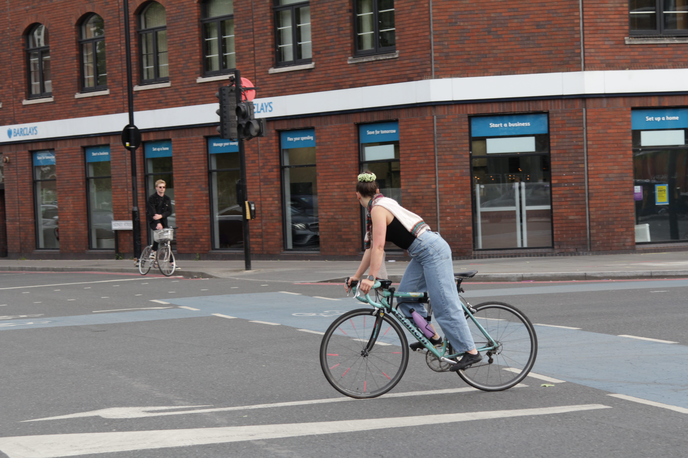
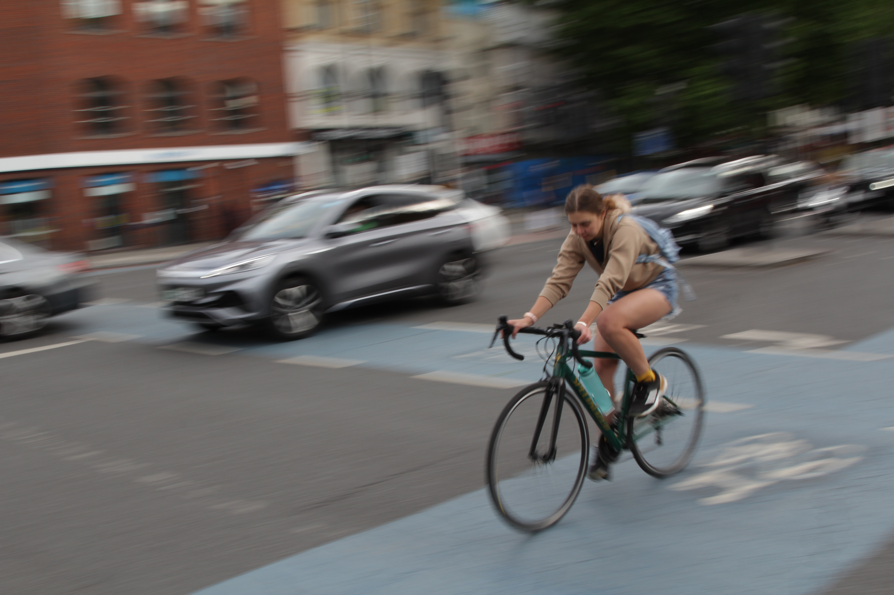
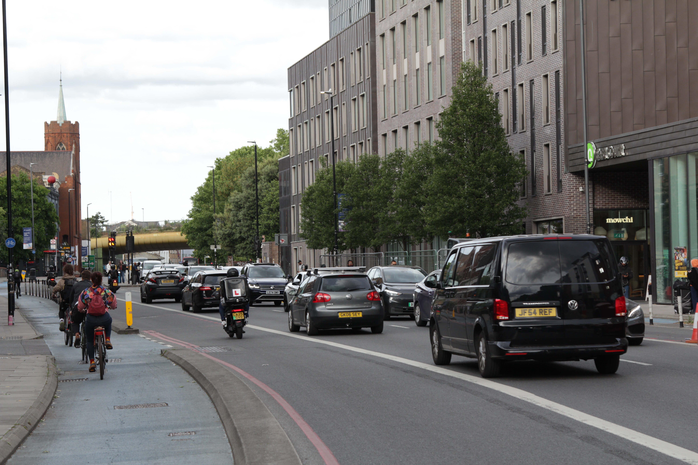
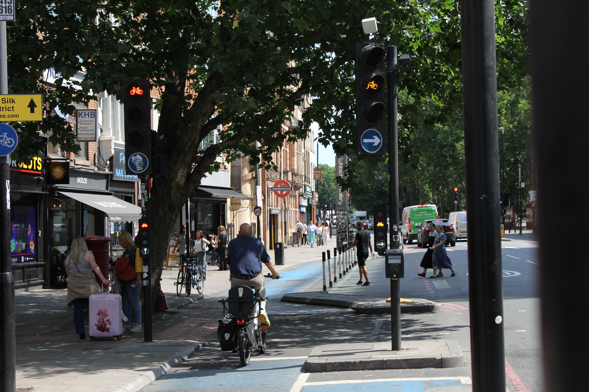
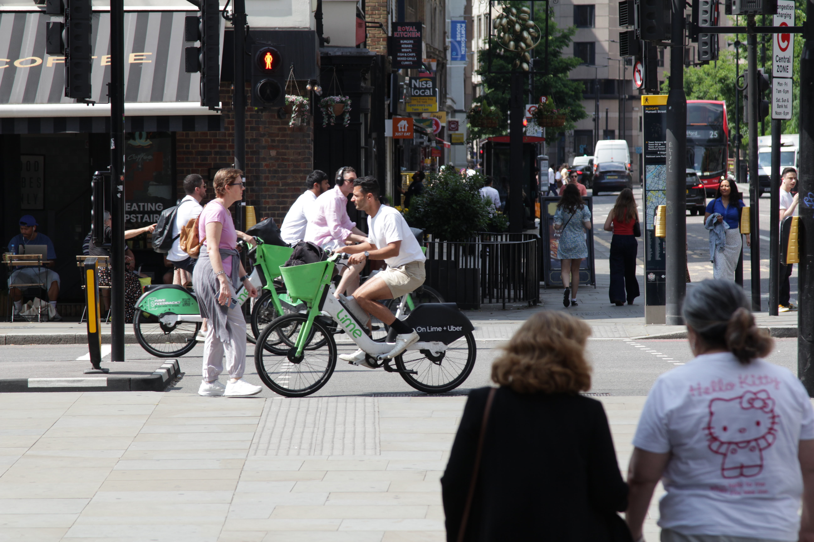
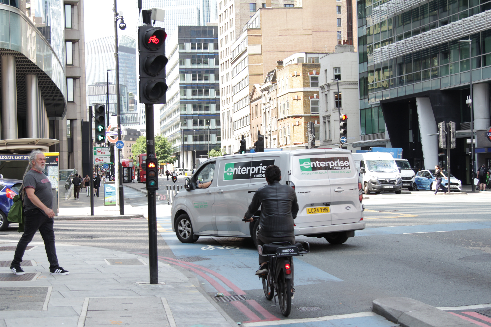
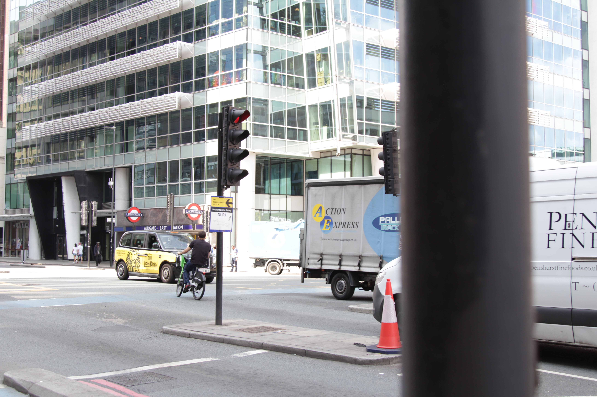
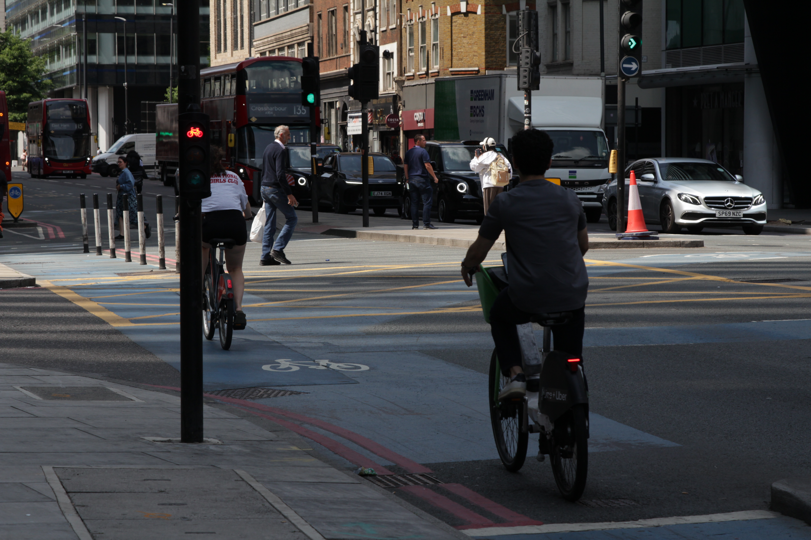
Mile End to Victoria Park via Regent's Canal
The sense-optimized route: a scenic pathway that prioritizes environmental quality and cycling experience over pure efficiency.
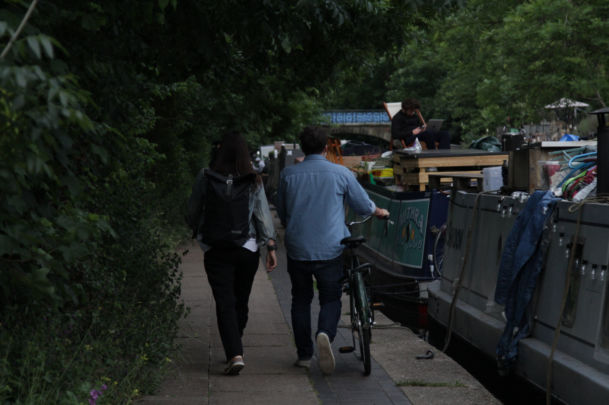
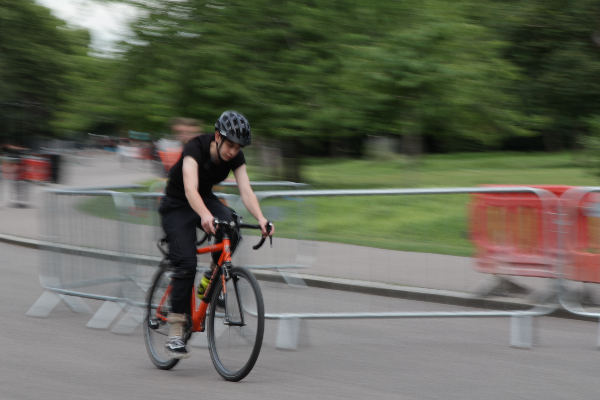
Photographic Documentation as Cultural Probe
This photographic exploration suggests that cyclist route choice is fundamentally driven by a dichotomy between efficiency optimization and experiential quality. The visual documentation reveals distinct environmental affordances: the superhighway prioritizes speed and directness through dedicated infrastructure, while the canal route emphasizes sensory richness and environmental quality despite longer journey times.
The hypothesis emerges that urban cyclists navigate a constant negotiation between temporal efficiency and embodied experience, with route selection serving as a manifestation of broader life priorities and urban relationship patterns.
This preliminary study acknowledges several inherent biases that must be addressed in future research:
Current limitations include a small sample size (two routes, single observer) and limited temporal scope. The photographic method captures environmental qualities but lacks quantitative metrics of actual cyclist behavior, journey times, or user experience data.
Geographic specificity to East London limits generalizability to other urban contexts with different infrastructure, topography, or cultural cycling practices.
This photographic documentation demonstrates potential as a cultural probe within ethnographic research frameworks. Future development could expand this method through:
To mitigate current limitations, future research should incorporate:
Photography as cultural probe offers unique advantages for understanding embodied urban experience. Visual documentation captures tacit environmental qualities that surveys or interviews might miss, while remaining accessible to diverse audiences including policymakers, urban planners, and cycling advocates.
This method bridges academic research and public engagement, creating compelling narratives that can influence urban design decisions and cycling infrastructure investments.
This photographic exploration represents the beginning of a larger investigation into urban cycling behavior. Future phases will incorporate participant photography, GPS tracking, and collaborative documentation with London's cycling communities.
Interested in contributing? Cyclists, urban planners, and researchers are invited to participate in expanding this methodology through collaborative documentation projects and ethnographic studies.
Additional perspectives on urban cycling in London